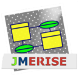
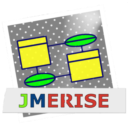

RÉALISATIONS & MISSIONS
Compétences :


 


Réalisations au sein de mon école :
GLPI
GLPI est un outil open-source conçu pour gérer les infrastructures informatiques et le parc matériel d'une organisation.

SITE RESPONSIVE
Un site pensé pour tous les écrans, c'est plus qu'un simple confort : c'est une nécessité
RECONSTITUTION D'UN SITE
Reproduire un site complet à partir de captures d’écran, sans autre indication, voilà le défi qui nous a été proposé en début de BTS.
SÉCURISATION D'UN SITE AVEC OWASP
Apprendre à protéger une application web dès ses premières lignes de code, c’était l’objectif de ce projet de sécurisation en PHP, réalisé selon les principes de l’OWASP.
TESTS UNITAIRES EN JAVA
Dans ce projet, l’objectif était de mettre en place des tests unitaires avec JUnit, afin de valider le bon fonctionnement d’une calculatrice codée en Java.
SERVEUR DNS
Ce projet avait pour objectif de déployer un environnement serveur complet via Windows Server 2016 dans une machine virtuelle, en installant les rôles
AD DS (Active Directory Domain Services) et DNS.
Réalisations au sein de mon entreprise :
GLPI
GLPI est un outil open-source conçu pour gérer les infrastructures informatiques et le parc matériel d'une organisation.
GPO
Une GPO (Group Policy Object) est un outil essentiel permettant aux administrateurs système de déployer et appliquer des stratégies sur les ordinateurs et les utilisateurs d’un domaine Active Directory.

Voici quelques réalisations personnelles ou antérieures :
Ici vous pourrez retrouvez quelques-unes de mes créations sur Tinkercad !
Testez les en cliquant sur les liens

Liens Tinkercad :
Ici vous pourrez retrouvez des images de mon projet qui consiste à piloter une grue miniature pour transporter des objets !

1er MINI PROJET:
Grue miniature
Ici vous pourrez retrouvez des images de mon projet qui consiste à réaliser à partir de zéro, un distributeur de croquettes automatisé !
2ème MINI PROJET:
Distributeur de croquettes automatisé